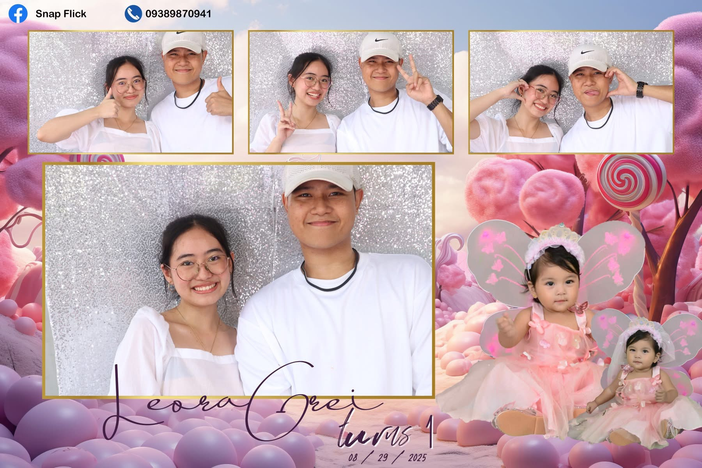

Love is often described as a feeling that’s hard to put into words, but when it comes to her, I find myself overflowing with reasons why she has captured my heart. She isn’t just kind, she embodies kindness in every little gesture.
She’s super pretty, but her beauty isn’t only on the outside, it shines from within, through her smile, her laughter, and the way she makes everyone around her feel lighter. On top of that, she’s undeniably smart, which makes her not just someone I admire, but also someone I deeply respect.
“Love isn’t supposed to be complicated, when you’re with the right person, it feels natural, effortless, and like home."
Little Things I Adore
There are little things about her that make me love her even more. She loves the color green, which feels so fitting. It’s the color of life, growth, and harmony, much like what she brings into my life.
She has a sweet tooth, always leaning towards sugary treats, especially her coffee—sweet enough to match her own sweetness. It’s funny how she loves green, but doesn’t like matcha, and honestly, that quirk makes her even more endearing.
What makes her stand out even more is her personality. There’s a sense of childlike joy in her "very bata" yet it’s paired with a love so genuine and warm that it makes you want to hold onto it forever. She’s the kind of girl who becomes extra cute whenever she gets kilig, and I can’t help but smile whenever I see that side of her. Somehow, her happiness becomes my happiness, and just by being herself, she makes my world feel brighter.
Loving Her Feels Like Home
At the end of the day, it’s not just one thing about her that makes me fall in love it’s everything. Her kindness, her beauty, her intelligence, her quirks, and her way of making me happy without even trying. Loving her feels natural, effortless, and infinite. She’s not just a girl I love she’s the reason my heart feels happy
I MISS YOU